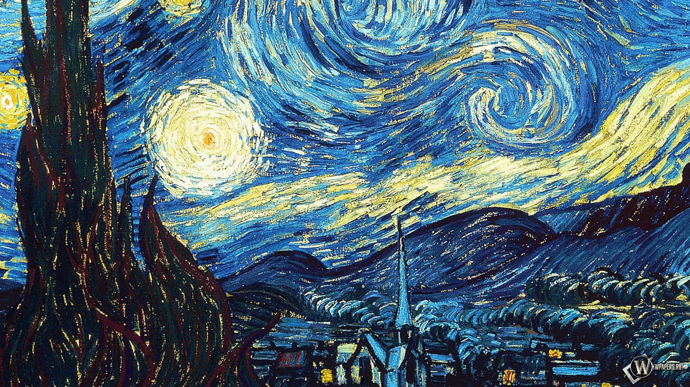

Звездная ночь - Винсент ван Гог
Описание картины "Звездная ночь":
Одна из наиболее известных картин нидерландского художника-постимпрессиониста Винсента Ван Гога. Представляет вид из восточного окна спальни Ван Гога в Сен-Реми-де-Прованс на предрассветное небо и вымышленную деревню. Картина написана в июне 1889 года; с 1941 года хранится в Музее современного искусства в Нью-Йорке. По мнению известного астрофизика Нила Тайсона - это первая картина, на которой небо является главным предметом изображения. Символический смысл картины многие трактуют по-разному. Некоторые склонны видеть в картине прямую цитату Ветхого завета или Откровения. Кто-то считает излишнюю экспрессивность картины результатом болезни мастера. Все сходятся в одном - мастер к концу жизни лишь наращивает внутреннее напряжение своих работ. Мир искажается в восприятии художника, он перестает быть прежним, в нем обнаруживаются новые формы, линии и новые эмоции, более сильные и точные. Мастер обращает внимание зрителя на те фантазии, которые делают окружающий мир более ярким и нестандартным.
Больше информации о картине...